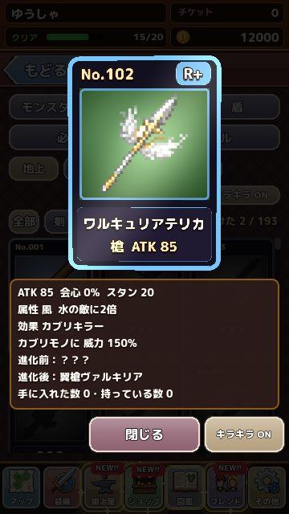

天空の攻略 後半：雷雲の峡谷から嵐の回廊まで
天空の後半 6 エリアの敵・弱点・中ボスとボスの戦い方・初回クリアの品と準備のコツをまとめました。 更新：2026-11-23
この記事の見方
天空の後半、雷雲の峡谷から嵐の回廊までの 6 つのエリアを紹介します。前半のエリアは 天空の攻略 前半、スワイプガードの決まりは 天空編とスワイプガード にまとめています。
表の見方は前半と同じです。「有利な属性」はその敵に 2 倍のダメージを与えられる武器の属性（無属性の敵には無属性の武器で 1.5 倍）、「カウント」は敵が攻撃してくるまでの数、「特殊攻撃」の % はふつうの攻撃のうち特殊攻撃になる割合です。
後半で変わること
- 特殊攻撃の種類がそろう：後半は、感電の雷雲の峡谷、祝福の天空都市と空中庭園、風迅の太陽の塔と嵐の回廊と、エリアごとに目立つ特殊攻撃がはっきり分かれます。行き先に合わせて、特殊攻撃を出させない盾を選ぶのが攻略の近道です
- 天空都市の店：凪（風迅が出ない）・破魔（祝福が出ない）・絶縁（感電のダメージ 0）など、後半の特殊攻撃に効く盾がそろいます
- 速いボスが続く：太陽の塔と嵐の回廊のボスはカウントが 2 で、必殺技には風迅がつきます
- 盾のレア度がさらに上がる：星屑の湖から先は、落ちる盾が SR・SSR・UR になり、UR の割合がぐっとふえます
- 物語の品：星屑の湖のボスからは「水のクリスタル」、太陽の塔のボスからは「炎のクリスタル」が手に入ります

雷雲の峡谷
雷雲がたちこめる、光属性の谷です。アマグモ・ヒカリグモ・ヨルグモのクモのなかま（剣が弱点）、ワイバーン（槍が弱点）、ペガサス（槌が弱点）が出てきます。クモのなかまはふつうの攻撃のうち 30% が「感電」で、2 回目に ⚡ が出ます。
| 役 | 名前 | 種族 | 属性 | 弱い武器 | 有利な属性 | カウント | 特殊攻撃 |
|---|---|---|---|---|---|---|---|
| 中ボス（STAGE 4） | 大カミナリグモ | ゴースト | 光 | 剣 | 闇 | 3 | 感電（40%） |
| ボス（STAGE 5） | 雷竜ボルテクス | ドラゴン | 光 | 剣 | 闇 | 3 | 感電（必殺技のたび） |
| 名前 | 種族 | 属性 | 弱い武器 | 有利な属性 | 特殊攻撃 |
|---|---|---|---|---|---|
| アマグモ | ゴースト | 水 | 剣 | 風 | 感電（30%） |
| ヒカリグモ | ゴースト | 光 | 剣 | 闇 | 感電（30%） |
| ヨルグモ | ゴースト | 闇 | 剣 | 光 | 感電（30%） |
| スカイワイバーン | ドラゴン | 無 | 槍 | 無 | － |
| ゲイルワイバーン | ドラゴン | 風 | 槍 | 炎 | － |
| シャインワイバーン | ドラゴン | 光 | 槍 | 闇 | － |
| ヒバナペガサス | ペガサス | 炎 | 槌 | 水 | － |
| ナミペガサス | ペガサス | 水 | 槌 | 風 | － |
中ボス・大カミナリグモ
光属性のゴーストで、弱点は剣、有利な属性は闇です。ふつうの攻撃のうち 40% が感電になります。2 回の攻撃のうち 2 回目が ⚡ になるので、← で受けたら指を置いたまま、すぐに画面をたたき始めましょう。たたいた回数は前の発が当たった時から数えます。
ボス・雷竜ボルテクス
光属性のドラゴンで、弱点は剣です。必殺技「ボルテクスサンダー」のたびに感電がつき、2 回目か 3 回目が ⚡ になります。⚡ が 2 回目に来るか 3 回目に来るかは毎回変わるので、2 回目の吹き出しの色（オレンジか黄色か）を見て、フリックするのかたたくのかを切りかえます。⚡ は 12 回たたけばミラクルなので、それまでの発をジャスト以上でつないでいれば、必殺技全体をミラクルにできます。
⚡ のたたきが苦手なら、風車の浮島で買える天馬の蹄鉄盾（避雷）で感電そのものを止めるか、天空都市で買える琥珀の盾（絶縁）で ⚡ のダメージを 0 にする手があります。避雷なら、必殺技はふつうの 3 回の連続攻撃になります。
おすすめの武器と初回クリアの品
剣をメインに、ワイバーン用の槍とペガサス用の槌のどちらかをサブにします。中ボスとボスが光属性なので、闇属性の剣があれば理想的です。初回クリアの品は 雷槌サンダーヘッド（槌・光・LR）で、会心のとき、ほかの敵全員に威力 30% の雷が落ちます。
天空都市
雲の上に築かれた、光属性の都市です。後半でただ一つ店があります。エンジェルペットなどの天使のなかま（テンシ、剣が弱点）、熱気球や星見のおやじ（槌が弱点）、クモ（剣が弱点）が出てきます。天使のなかまは攻撃のたびに「祝福」を使い、天使がいるあいだ、ほかの敵が受けるダメージが半分になります。
| 役 | 名前 | 種族 | 属性 | 弱い武器 | 有利な属性 | カウント | 特殊攻撃 |
|---|---|---|---|---|---|---|---|
| 中ボス（STAGE 4） | 大気球おやじ | おやじ | 光 | 槌 | 闇 | 3 | － |
| ボス（STAGE 5） | 熾天使セラフィーネ | テンシ | 光 | 剣 | 闇 | 3 | － |
| 名前 | 種族 | 属性 | 弱い武器 | 有利な属性 | 特殊攻撃 |
|---|---|---|---|---|---|
| エンジェルペット | テンシ | 無 | 剣 | 無 | 祝福（100%） |
| アクアエンジェル | テンシ | 水 | 剣 | 風 | 祝福（100%） |
| ホーリーエンジェル | テンシ | 光 | 剣 | 闇 | 祝福（100%） |
| 熱気球おやじ | おやじ | 炎 | 槌 | 水 | － |
| 星見おやじ | おやじ | 光 | 槌 | 闇 | － |
| 夜ふかしおやじ | おやじ | 闇 | 槌 | 光 | － |
| アマグモ | ゴースト | 水 | 剣 | 風 | 感電（30%） |
| ヒカリグモ | ゴースト | 光 | 剣 | 闇 | 感電（30%） |
祝福の天使を先に
祝福は、天使が倒れるか、天使がスタンしているあいだは働きません。天使の混じった WAVE では、天使から先に倒すのが鉄則です。天使はどれも剣が弱点なので、剣でスタンを取るだけでも祝福を止められます。祝福は天使自身にはかからないので、天使にはいつもどおりのダメージが入ります。
中ボス・大気球おやじ
光属性のおやじで、弱点は槌、有利な属性は闇です。特殊攻撃はなく、2 回の連続攻撃だけです。ただし、同じ WAVE に天使がいると、祝福で大気球おやじへのダメージも半分になります。天使がいたら、先に片づけてから攻撃しましょう。
ボス・熾天使セラフィーネ
光属性のテンシで、弱点は剣です。セラフィーネ自身は祝福を使いませんが、かならず 2 体のホーリーエンジェルを連れて現れます。2 体の天使は交代で祝福をかけるので、祝福をかけた天使がスタンせずに立っているかぎり、セラフィーネへのダメージは半分になります。さらにセラフィーネは、必殺技「セラフィックレイ」を撃ち終えると、倒れた天使を呼びもどします。戦いが始まった瞬間の祝福はありません。
攻め方は 2 つあります。1 つは、天使 2 体を倒してから、次の必殺技までの間にセラフィーネを集中して削るやり方です。もう 1 つは、天空都市の店で買える虹の盾（破魔）を付けて、祝福そのものを出させないやり方です。破魔の盾があれば、天使がいてもセラフィーネに全力のダメージが入ります。天使からはごほうびが出ず、セラフィーネが倒れると天使も去っていきます。
おすすめの武器と初回クリアの品
剣をメインに、おやじ用の槌をサブにします。光属性の敵が多いので、闇属性の剣が有利です。初回クリアの品は 熾天剣セラフ（剣・光・LR）で、ハーピー・テンシ・ペガサスへのスタンのたまりが 150% になります。天使のスタンを取りやすくなるので、このあとの祝福の多いエリアでも役立ちます。
準備のコツ：店では、雷雲の盾（凪：風迅が出ない）、虹の盾（破魔：祝福が出ない）、天使の羽衣盾（HP が 0 になる攻撃を STAGE ごとに 1 回耐える）、琥珀の盾（絶縁：感電のダメージ 0）、宵空の盾（上昇気流：全部ガードすると ST +1）が買えます。後半はこの店の盾を、行き先ごとに付けかえて使うのがおすすめです。
星屑の湖
星のかけらが沈む、水属性の湖です。ハネウサギのなかま（ファビット、槍が弱点）、ソラクラゲのなかま（マーメイド、剣が弱点）、天使のなかまが出てきます。ウサギは風迅、クラゲは感電、天使は祝福と、3 種類の特殊攻撃がそろうエリアです。ここから落ちる盾の UR の割合がふえます。
| 役 | 名前 | 種族 | 属性 | 弱い武器 | 有利な属性 | カウント | 特殊攻撃 |
|---|---|---|---|---|---|---|---|
| 中ボス（STAGE 4） | 大ソラクラゲ | マーメイド | 水 | 剣 | 風 | 3 | 感電（40%） |
| ボス（STAGE 5） | 星鯨ステラホエール | マーメイド | 水 | 槍 | 風 | 3 | － |
| 名前 | 種族 | 属性 | 弱い武器 | 有利な属性 | 特殊攻撃 |
|---|---|---|---|---|---|
| ヒバナウサギ | ファビット | 炎 | 槍 | 水 | 風迅（25%） |
| シズクウサギ | ファビット | 水 | 槍 | 風 | 風迅（25%） |
| ヨルウサギ | ファビット | 闇 | 槍 | 光 | 風迅（25%） |
| ソラクラゲ | マーメイド | 無 | 剣 | 無 | 感電（30%） |
| アメクラゲ | マーメイド | 水 | 剣 | 風 | 感電（30%） |
| ホシクラゲ | マーメイド | 光 | 剣 | 闇 | 感電（30%） |
| エンジェルペット | テンシ | 無 | 剣 | 無 | 祝福（100%） |
| アクアエンジェル | テンシ | 水 | 剣 | 風 | 祝福（100%） |
中ボス・大ソラクラゲ
水属性のマーメイドで、弱点は剣、有利な属性は風です。ふつうの攻撃のうち 40% が感電になります。雷雲の峡谷の大カミナリグモと同じように、← のあとすぐにたたく準備をしておきましょう。
ボス・星鯨ステラホエール
水属性のマーメイドで、弱点は槍です。特殊攻撃は使わず、必殺技「メテオスプラッシュ」は 3 回のふつうの速さの連続攻撃です。後半のボスの中では素直な相手なので、雑魚の特殊攻撃さえ乗り切れば、落ち着いて戦えます。ここで勝つと「水のクリスタル」が手に入ります。
おすすめの武器と初回クリアの品
槍と剣の 2 本立てです。中ボスとボスが水属性なので、風属性の武器が有利です。前半の妖鳥槍ハルピュイア（槍・風）は、ステラホエールの弱点の種類と有利な属性を同時につけられます。初回クリアの品は 空鯨槍スカイホエール（槍・水・LR）で、必殺技の威力が 120% になります。
準備のコツ：特殊攻撃が 3 種類まざるので、盾は自分がいちばん苦手なものに合わせて選びます。⚡ が苦手なら避雷か絶縁、天使の祝福で長引くなら破魔、速い 2 回目が苦手なら凪です。
空中庭園
花の咲きみだれる空の庭で、風属性のエリアです。フレアエンジェルなどの天使のなかま（剣が弱点、祝福を使う）、トウガラシツルーガなどのマメツルーガのなかま（剣が弱点）、ハネウサギ（槍が弱点）が出てきます。ウサギ以外はすべて剣が弱点なので、剣が 1 本あれば道中の大半は弱点をつけます。たからの STAGE もあるエリアです。
| 役 | 名前 | 種族 | 属性 | 弱い武器 | 有利な属性 | カウント | 特殊攻撃 |
|---|---|---|---|---|---|---|---|
| 中ボス（STAGE 4） | 大エンジェルペット | テンシ | 風 | 剣 | 炎 | 3 | 祝福（100%） |
| ボス（STAGE 5） | 花の魔人フロラリス | プランこ | 風 | 剣 | 炎 | 4 | － |
| 名前 | 種族 | 属性 | 弱い武器 | 有利な属性 | 特殊攻撃 |
|---|---|---|---|---|---|
| フレアエンジェル | テンシ | 炎 | 剣 | 水 | 祝福（100%） |
| ウィンドエンジェル | テンシ | 風 | 剣 | 炎 | 祝福（100%） |
| ダークエンジェル | テンシ | 闇 | 剣 | 光 | 祝福（100%） |
| トウガラシツルーガ | プランこ | 炎 | 剣 | 水 | － |
| ミズマメツルーガ | プランこ | 水 | 剣 | 風 | － |
| クロマメツルーガ | プランこ | 闇 | 剣 | 光 | － |
| ヒバナウサギ | ファビット | 炎 | 槍 | 水 | 風迅（25%） |
| シズクウサギ | ファビット | 水 | 槍 | 風 | 風迅（25%） |
中ボス・大エンジェルペット
風属性のテンシで、弱点は剣、有利な属性は炎です。攻撃のたびにかならず祝福を使い、いっしょに出ている雑魚のダメージを半分にします。中ボスは HP が多いので倒すまでに時間がかかりますが、スタンさせれば祝福は止まります。剣でスタンを取ってから雑魚を片づけるか、破魔の盾で祝福を出させないようにしましょう。
ボス・花の魔人フロラリス
風属性のプランこで、弱点は剣です。カウントが 4 のパワータイプで、必殺技「フラワーストーム」の前に力をため、攻撃力が 2 倍になります。特殊攻撃は使いませんが、力をためた必殺技はミラクルにならず、ジャストが最高です。HP が多く、スタンもしにくいので、長い戦いになります。必殺技は 3 回ともジャスト以上で受け、ダメージをできるだけおさえましょう。
たからの STAGE
空中庭園にも、たからのチケットで入れる「たからの STAGE」があります。番人はクモッくんで、最初の攻撃の「お肉ちょーだい！」は肉のボタンをフリックして受けると宝箱が 1 つふえます。空中庭園の番人が落とす盾は、浮遊遺跡より UR の割合が高くなっています。
おすすめの武器と初回クリアの品
剣がメインで、ウサギ用の槍をサブにします。中ボスとボスが風属性なので、炎属性の剣があれば理想的です。初回クリアの品は 豆の木剣ジャックレイピア（剣・風・LR）で、同じ WAVE で使うたびに威力が 5% ずつ上がり、いちばん上で 30% 増しになります。
準備のコツ：フロラリスの重い必殺技には、必殺の守り（ハーピーの羽盾）や、HP が 0 になる攻撃を 1 回耐える天使の羽衣盾が頼りになります。
太陽の塔
太陽に向かってそびえる、炎属性の塔です。フレイムワイバーンなどのワイバーン（槍が弱点）、ユウヒクラゲなどのクラゲのなかま（剣が弱点、感電を使う）、天使のなかま（剣が弱点、祝福を使う）が出てきます。
| 役 | 名前 | 種族 | 属性 | 弱い武器 | 有利な属性 | カウント | 特殊攻撃 |
|---|---|---|---|---|---|---|---|
| 中ボス（STAGE 4） | 大スカイワイバーン | ドラゴン | 炎 | 槍 | 水 | 3 | － |
| ボス（STAGE 5） | 炎翼鳥フェニクシア | ケモノ | 炎 | 槍 | 水 | 2 | 風迅（必殺技のたび） |
| 名前 | 種族 | 属性 | 弱い武器 | 有利な属性 | 特殊攻撃 |
|---|---|---|---|---|---|
| フレイムワイバーン | ドラゴン | 炎 | 槍 | 水 | － |
| アクアワイバーン | ドラゴン | 水 | 槍 | 風 | － |
| シャドウワイバーン | ドラゴン | 闇 | 槍 | 光 | － |
| ユウヒクラゲ | マーメイド | 炎 | 剣 | 水 | 感電（30%） |
| カゼクラゲ | マーメイド | 風 | 剣 | 炎 | 感電（30%） |
| ヨルクラゲ | マーメイド | 闇 | 剣 | 光 | 感電（30%） |
| フレアエンジェル | テンシ | 炎 | 剣 | 水 | 祝福（100%） |
| ウィンドエンジェル | テンシ | 風 | 剣 | 炎 | 祝福（100%） |
中ボス・大スカイワイバーン
炎属性のドラゴンで、弱点は槍、有利な属性は水です。特殊攻撃はなく、2 回の連続攻撃だけです。水属性の槍で一気に削りましょう。
ボス・炎翼鳥フェニクシア
炎属性のケモノで、弱点は槍です。カウントが 2 の速いボスで、必殺技「フェニックスフレア」のたびに風迅がつきます。そして最大の特徴は、一度だけよみがえることです。HP を 0 にすると炎に包まれて立ち上がり、最大 HP の 30% でよみがえります。このときスタンなどの状態異常はすべて消え、少し間をおいてから、すぐに必殺技を撃ってきます。
よみがえりは一度きりなので、「2 回倒す」つもりで戦いの配分を考えましょう。1 回目を倒した直後は、攻撃の準備よりもまず、来る必殺技のガードに集中します。必殺技には風迅がつくので、青い「!!」を見たら、2 回目・3 回目の速い向きに備えてください。凪の盾（雷雲の盾）を付ければ、必殺技はふつうの速さになります。ここで勝つと「炎のクリスタル」が手に入ります。
おすすめの武器と初回クリアの品
槍をメインに、クラゲと天使用の剣をサブにします。中ボスとボスが炎属性なので、水属性の武器が有利です。星屑の湖の空鯨槍スカイホエール（槍・水）は、フェニクシアの弱点の種類と有利な属性を同時につけられます。初回クリアの品は 炎槌ソルインパクト（槌・炎・LR）で、必殺技の威力が 135% になります。
嵐の回廊
天空の通常のエリアの最後は、嵐が吹きあれる水属性の回廊です。アメハーピィなどのハーピィ（槍が弱点）と、ホムラグリフォンなどのグリフォン（槌が弱点）が中心で、ワイバーンも出てきます。ハーピィとグリフォンは、ふつうの攻撃のうち 30% が風迅です。風迅のオンパレードなので、凪の盾がもっとも効くエリアです。
| 役 | 名前 | 種族 | 属性 | 弱い武器 | 有利な属性 | カウント | 特殊攻撃 |
|---|---|---|---|---|---|---|---|
| 中ボス（STAGE 4） | 大グリフォン | ケモノ | 水 | 槌 | 風 | 2 | 風迅（40%） |
| ボス（STAGE 5） | 嵐神鳥ガルーダ | ケモノ | 水 | 槌 | 風 | 2 | 風迅（必殺技のたび） |
| 名前 | 種族 | 属性 | 弱い武器 | 有利な属性 | 特殊攻撃 |
|---|---|---|---|---|---|
| アメハーピィ | ハーピー | 水 | 槍 | 風 | 風迅（30%） |
| ツムジハーピィ | ハーピー | 風 | 槍 | 炎 | 風迅（30%） |
| ヤミハーピィ | ハーピー | 闇 | 槍 | 光 | 風迅（30%） |
| ホムラグリフォン | ケモノ | 炎 | 槌 | 水 | 風迅（30%） |
| アオグリフォン | ケモノ | 水 | 槌 | 風 | 風迅（30%） |
| クログリフォン | ケモノ | 闇 | 槌 | 光 | 風迅（30%） |
| フレイムワイバーン | ドラゴン | 炎 | 槍 | 水 | － |
| アクアワイバーン | ドラゴン | 水 | 槍 | 風 | － |
中ボス・大グリフォン
水属性のケモノで、弱点は槌、有利な属性は風です。カウントが 2 と短いうえ、ふつうの攻撃のうち 40% が風迅になります。攻撃の回数が多く、速い 2 回目に何度も向き合うので、中ボスでも気が抜けません。
ボス・嵐神鳥ガルーダ
水属性のケモノで、弱点は槌です。カウントが 2 の速いボスで、必殺技「ガルーダテンペスト」のたびに風迅がつきます。攻撃の回数が多く、必殺技の速い 3 回が次々にやってくる、とくにあわただしいボスです。凪の盾で風迅を止めれば、必殺技はふつうの速さの 3 回になります。
ガルーダに勝てばエリアの攻略は終わりで、この先には天空の最後の城が待っています。ここまでに手に入れた武器と盾を鍛冶屋で鍛え、天空の素材「雲のかけら」「天空石」で進化させてから進みましょう。
おすすめの武器と初回クリアの品
槌と槍の 2 本立てです。中ボスとボスが水属性なので、風属性の槌があれば理想的で、前半の風車槌ミルブレイカーや巨人の槌ギガンハンマー（どちらも槌・風）がぴったり合います。初回クリアの品は 嵐槍ストームブリンガー（槍・水・LR）で、会心のとき、ほかの敵全員に威力 50% の雷が落ちます。

後半の初回クリアの品
| エリア | 品 | 種類 | 属性 | 効果 |
|---|---|---|---|---|
| 雷雲の峡谷 | 雷槌サンダーヘッド | 槌 | 光 | 雷雲：会心のとき、ほかの敵全員に威力 30% の雷 |
| 天空都市 | 熾天剣セラフ | 剣 | 光 | 神鳴り：ハーピー・テンシ・ペガサスへのスタンのたまり 150% |
| 星屑の湖 | 空鯨槍スカイホエール | 槍 | 水 | 星降り：必殺技の威力 120% |
| 空中庭園 | 豆の木剣ジャックレイピア | 剣 | 風 | 豆の木の成長：同じ WAVE で使うたびに威力 +5%（いちばん上で +30%） |
| 太陽の塔 | 炎槌ソルインパクト | 槌 | 炎 | 星降り・極：必殺技の威力 135% |
| 嵐の回廊 | 嵐槍ストームブリンガー | 槍 | 水 | 雷雲・極：会心のとき、ほかの敵全員に威力 50% の雷 |
後半のエリアと盾の組み合わせ
| エリア | 目立つ特殊攻撃 | 向いている盾の効果 |
|---|---|---|
| 雷雲の峡谷 | 感電（クモ・中ボス・ボス） | 避雷（感電が出ない）・絶縁（⚡ のダメージ 0） |
| 天空都市 | 祝福（天使・ボスの取り巻き） | 破魔（祝福が出ない） |
| 星屑の湖 | 風迅・感電・祝福 | いちばん苦手なものに合わせる |
| 空中庭園 | 祝福（天使・中ボス）／重い必殺技 | 破魔・必殺の守り・天使の羽衣 |
| 太陽の塔 | 風迅（ボス）・感電・祝福 | 凪（風迅が出ない） |
| 嵐の回廊 | 風迅（雑魚・中ボス・ボス） | 凪 |
天空の盾は、特殊攻撃を「出させない」効果がとても強力です。エリアに着いたら、まず STAGE の詳細で出てくる敵を確かめ、この表を目安に盾を付けかえてから出発しましょう。